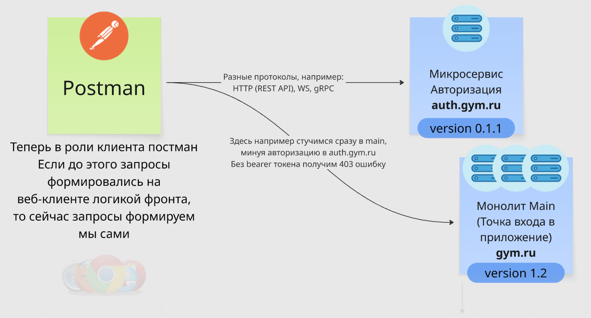
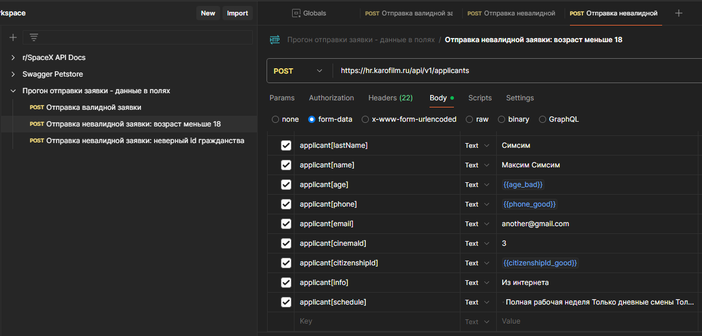

Данный практический урок будет посвящен глубокому изучению Postman, так как тестирование бэка заключается по большей части в работе с этим инструментом. Ты уже сталкивался в некоторых видео с постманом и может быть даже сам тыкал, однако сейчас пройдемся с самого начала.
Посмотри видео ниже, но не вникай в написание тестов в постмане. Посмотри как это в целом работает, пойми логику как подставляются переменные, обрати внимание на сниппеты — готовые шаблоны скриптов. НЕ надо копать в программирование на js.
Видео: Postman для тестировщиков — тестируем API реального проекта
🚀Главное про постман
Постман — по сути GUI клиент для отправки запросов, инструмент для тестирования API. Содержит в себе много жирного функционала, такого как:
Подмена данных в cURL
Тут понятно, можем удобно менять хэдеры, руками прописывать ручки, выбирать для них методы, менять тело запроса, фильтры и т.д. — всё что угодно
Дерево запросов
Коллекции, папки — удобный импорт, навигация по запросам. Для отдельного проекта может быть отдельная коллекция, для отдельной фичи — отдельная папка и т.д.
Импорт / экспорт
Можно например залить целую коллекцию просто загрузив файл OpenAPI в постман, или запаковать все свои запросы в единый файл для экспорта
Окружения
Можно удобно менять хосты для своих запросов (например, когда тестишь на разных стендах)
Переменные
Переменные коллекций и окружений — можно складировать тестовые данные для конкретных окружений и коллекций, и в дальнейшем легко подтягивать эти переменные в запросы с помощью {{пример}}
Авторизация
Удобный интерфейс для разных типов авторизации. Можно использовать данный ui, а можно через те же переменные, напрямую вставлять токен, например, в хэдер
Ран коллекции
Запуск, прогон — запуск нескольких запросов в последовательности. То есть выбранные ручки будут дергаться самостоятельно, и по окончании прогона будет сформирован отчет
Тесты (скрипты)
Можно писать автоматизированные проверки прямо в постмане, например, заставить постман самому подтянуть или рандомно сгенерировать переменную в какое-нибудь поле в запросе, или проверить ответ на запрос, например, на наличие 200-го статус кода
Заглушки (mock, моки)
Можно настроить постман на «виртуальную» работу с бэком. Допустим сам бэк еще не реализован, но готов сваггер, можно настроить моки и потестить возвращаемые ответы (ответы будет возвращать не бэк, а постман, в соответствии с теми примерами которые ты ему укажешь)
Postman Interceptor
Расширение для браузера, дополнительный инструмент, чтобы перехватывать трафик (запросы) в стриме. Например, ты серфишь сайт на вебе, а расширение пересылает эти запросы в постман (что-то вроде автокопирования курлов)
Рекомендую сделать сегодня перерыв, так как много инфы
Посмотри похожее видео (снизу) для закрепления на следующий день, и тогда же приступи к выполнению ДЗ. Оно объемное, поэтому будь готов возвращаться к материалу и иногда прибегать к помощи ChatGPT (например, для простого написания скриптов).
Видео: Postman — полный гайд от начала до продвинутых функций

Постман в клиент-серверной архитектуре — занимает роль клиента
✏️Выполнение ДЗ
Для начала зарегистрируйся на сайте постмана. Рекомендую устанавливать десктопный постман (Windows/MacOS), он удобнее и стабильнее.
Импорт коллекций
ДЗ №1
Задача: импортируй коллекции двух API: с помощью GUI и через импорт OpenAPI из сваггера.
Заполняй на фронте анкету вымышленными валидными данными
4
На шаге 5 из 5 после нажатия кнопки «Далее» уходит POST запрос applicants
5
Вылови в нетворке этот запрос, убедись что статус 200 и в ответе id, если нет — попробуй заполнить анкету по-другому. Скопируй курл запроса Copy as cURL (bash) — копируй в формате bash, так как cmd не передает формат тела form-data
6
Вставь курл в URL нового запроса
7
Убедись что постман корректно отформатировал запрос, проверь что метод POST, корректно переданы заголовки и тело запроса
8
Отправь запрос
9
Убедись что приходит 200 статус код и в теле ответа лежит id (прибавляется на 1 после каждого запроса)
Расширение
10
Установи расширение Postman Interceptor в браузер и авторизуйся в нем
11
На этом же сайте вернись на шаг назад в анкете
12
Перейди в расширение и нажми Start Capture
13
Нажми на фронте «Далее», тем самым отправив запрос
14
Перейди в расширение и нажми Stop Capture
15
Перейди в Postman и сделай скрин вкладки Interceptor debug session
В ответ на ДЗ пришли курл из пункта 5 и скрин из пункта 15.
Добавление переменных, заведение тестовых данных
ДЗ №3
Задача: заведи в постман некоторые тестовые данные по указанным требованиям, используя переменные. Добавь как валидные данные, так и невалидные для каждого из полей. Попробуй глобальные переменные, переменные окружений и переменные коллекций, попрактикуй применение переменных.
Требования для полей ввода (согласно фронту):
Возраст applicant[age]: 18-65
Гражданство applicant[citizenshipId]: 1-3 (1 — РФ, 2 — Беларусь, 3 — иное)
Телефон applicant[phone]: 10 цифр, цифры от 0 до 9
Глобальные переменные
1
В постмане перейди в Environments → Globals
2
Для каждого требования придумай 1 валидные данные и 1 невалидные, назови в соответствии с полями. Пример для гражданства: валидный citizenshipId_good = 1, невалидный citizenshipId_bad = 4
3
У тебя должно получиться 6 переменных, нажми кнопку Save и сделай скрин
4
Возвращайся к запросу и подставляй в body в значения полей валидные переменные, не забудь обернуть их в {{}}
5
Отправь запрос и сделай скрин, где видно подставленные в body переменные
6
Теперь подставь невалидные переменные
7
Отправь запрос и сделай скрин
Переменные окружений
8
В Environments нажми Create environment
9
Назови окружение valid_data (валидные данные)
10
Добавь валидные переменные из задания выше, назови в соответствии с полями: age, citizenshipId, phone
11
Должно получиться 3 переменных, сохрани, сделай скрин
12
Аналогично создай окружение invalid_data (невалидные данные) и добавь те же переменные, но с невалидными значениями
13
Сохрани, сделай скрин
14
Возвращайся к запросу, выставляй окружение valid_data и подставь в body переменные
15
Отправь запрос и сделай скрин
16
Выставь окружение invalid_data
17
Отправь запрос и сделай скрин
Переменные коллекций
18
Создай коллекцию через Create new collection, где будет лежать твой запрос
19
Перейди в коллекцию, вкладка Variables
20
Создай одну переменную citizenshipId_good = 2 и сохрани
21
Подставь эту переменную в запрос и наведи курсор на переменную, сделай скрин
22
Обрати внимание, что подставилась переменная коллекций, хотя переменная с точно таким же названием есть в глобальных переменных (шаг 2). В постмане приоритет отдается коллекциям
В ответ на ДЗ пришли скрины из пунктов 3, 5, 7, 11, 13, 15, 17, 21.
Прогоны коллекций
ДЗ №4
Задача: сформировать коллекции для прогонов, написать простые тесты на проверку ответа, проверить корректность работы бэкенда в соответствии с требованиями.
Формирование и прогон коллекций
1
Создай коллекцию и помести туда запрос из прошлого ДЗ
2
Перейди в Scripts → Post-Response, добавь скрипт на проверку статус кода — перейди в Snippets → Status code is 200
3
С помощью клонирования запросов создай помимо валидного еще 5 невалидных, проверки придумай сам отталкиваясь от требований в 3 части ДЗ и придумай им соответствующее название (пример на скрине ниже)
4
Для невалидных запросов в скрипте поменяй 200 на 422 (такой ответ мы ожидаем, если отправляем заявку с неверными данными)
5
Перейди в коллекцию и нажми Run
6
Нажми View Results и сделай скрин
Анализ результатов прогона
7
По каждому из непройденных тестов вкратце напиши, в чем заключается баг, в формате комментарий-ОР-ФР. Для описания ОР (ожидаемого результата) отталкивайся от требований
Многоитерационный прогон запроса
8
Представь есть требование: с одного номера телефона может быть отправлено не более 5 заявок за раз, иначе возвращать 422 ошибку
9
Создай 3 валидных заявки с новыми валидными номерами телефонов в каждой
10
Перейди в запуск коллекции и выбери только эти 3 запроса
11
Укажи в количестве итераций 30
12
Запусти прогон
13
Нажми View Summary и сделай скрин
14
Прокомментируй, в чем заключается баг
В ответ на ДЗ пришли скрины из пунктов 6 и 13, описание найденных багов в API.

Пример формирования коллекций
🔌Тестирование Websocket и gRPC в Postman
🧠
Тестирование Websocket и gRPC в Postman
Также в постмане, помимо стандартного HTTP протокола, можно тестить GraphQL, WS и gRPC.
Ты уже знаком с этими протоколами из урока 2-3, прочитай статьи про тестирование Websocket и тестирование gRPC через Postman, можешь также сам попробовать подключиться к ресурсам и потыкать (а также эта возможность будет тебе доступна в уроке 2-12). И позже конкретизировать в своей легенде на примерах, как ты тестил эти протоколы.